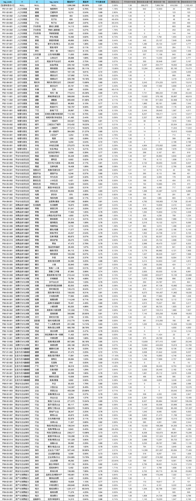

04 · 主要负责人 · 2026.04
大模型驱动的发票用户标签体系构建与业务应用
项目先用大模型快速挖掘发票中的可解释标签，再把 2,338 种长尾自由标签归纳成完整的发票标签体系，让标签可以入库、圈选、评估，并和产品一起持续共建。
- 自由标签输入
- 2,338 种
- 单用户长尾
- 约 76%
- 170 万用户推理周期
- 10 天 → 2.4 天
项目背景｜发票数据未充分使用，长尾标签也需要体系化
这个项目的背景有两层。第一层是发票数据信息密度高，但长期很难转化为稳定用户画像。发票里的 buyer、seller、item、金额和活跃度能反映职业、消费场景、经营行为和风险线索，但如果只停留在原始字段或少量固定 Schema，就很难进入后续圈选和策略使用。
第二层是大模型生成的标签足够丰富，却天然长尾。发票试点近一个月覆盖约 171 万开通用户，近一年约 541 万。AgentFlow 生成了 2,338 种自由标签，但约 76% 只在单个用户上出现。生成能力解决了“能否快速挖出标签”，但没有自动解决“标签能否稳定入库、圈选和治理”。
因此这个项目不是单纯做一次打标，而是探索以大模型 token 换人力：1–2 人快速从发票中挖掘可解释标签，并进一步归纳为可持续消费的发票标签体系，打通“数据挖掘 → 标签资产 → 业务 / 产品使用”。
项目目标｜构建能打标、能解释、能共建的完整发票标签体系
项目目标分两步。第一步是让系统能稳定打标：从发票中抽取结构化字段、涌现标签和自然语言 Summary，并给出可回溯的 evidence。第二步是把这些结果收敛成一套完整的发票标签体系，让标签能直接用于入库、圈选、评估和产品共建。
这套体系需要同时满足三个要求：标签要能解释，产品可以对着原始发票证据讨论对错；标签要能共建，产品评审和规则修正可以持续回流；标签要能直接使用，不能停留在一次性的自由文本输出。
技术路径｜先开放挖掘，再稳定归纳，最后产品回流
第一步：设计标签供给链路。 上游 AgentFlow 遵循“代码做确定性规则，LLM 做语义判断”。代码负责清洗、派生、白名单、Schema 校验和置信度重打分；LLM-A 决定搜索哪些陌生实体，LLM-B 负责最终打标与 Summary。每条标签统一输出 value、confidence 和引用真实 buyer / seller / item 的 evidence。

第二步：构建完整的发票标签体系。 固定字段、涌现短语与 Summary 进入同义清洗和敏感过滤；长尾短语归入稳定主题；主题组合为人群口径；最终沉淀为用户标签长表 / 宽表，支持入库、圈选、评估和治理，并通过产品评审持续回流。


第三步：用评测和裁判复核验证方案。 固定 Schema 约有 20 个枚举字段，单用户通常输出 3–7 个标签且包含较多 unknown；涌现方案输出 2,338 种自由短语，单用户得到 5–10 个有效标签，并能细化到具体职业、会员和生活方式。

第四步：工程提效与二次 Agent。 发票全量生产如果直接按原链路跑，成本和耗时都不可接受。我主要从 prefix cache、搜一搜摘要截断、模型选型和并行度调优几方面压缩成本：针对约 171 万开通有发票用户，将全量生产由约 10 天压至 2–6 天。二次 Agent 则使用阶段一的 buyer_top5、occupation 和原始证据，将开放语义收敛为严格二分类，只对争议样本调用裁判 Agent。


项目结果｜形成标签资产闭环，并支撑业务评估与治理
以大厂员工金标为例，Agent Accuracy 为 0.592，V4 为 0.490；Agent Precision 为 0.675，V4 为 0.488。去除 unknown 后 Accuracy 提升 12.15 个百分点；裁判 Agent 在分歧样本中支持新方案的比例为 99.18%。
工程侧 prefix cache 提速约 21%，搜索摘要截断提速约 36% 且 F1 未下降；切换小模型后，170 万用户推理周期由约 10 天压缩到 2–6 天。三级体系进一步在九个一级主题上检查覆盖，并对 138 个可评估标签统计 0+ 金额违约 Lift。

更具体地看，标签体系不是只留下一个 HVLR 结论，而是把不同来源的发票信号整理成可讨论的标签积木。例如，“商旅达人 / 差旅达人 / 高频商务出行”统一到“商务差旅”；“山姆会员”沉淀为会员与消费偏好标签；“燃油车主 / 新能源车主”归到车辆与出行标签；“腾讯员工 / 大厂互联网员工 / 互联网从业者”则进入职业身份层级，并在需要严格口径时交给二次 Agent 做 0/1 复核。
这些标签进入业务使用时，不直接按单个短语圈人，而是先沉淀为 tag_code、一级主题、二级主题和可读标签名。对外展示时我只保留 Lift 口径，避免暴露内部人群规模和表字段。下面是标签体系中可评估标签的样例：
| tag_code | l1 | l2 | tag_name | 违约0+金额占比 Lift | 违约7+金额占比 Lift |
|---|---|---|---|---|---|
| P08-01-001 | 职业与企业身份 | 企业 | 外企 | 0.55 | 0.53 |
| P07-01-001 | 生活方式兴趣健康 | 健康 | 健康关注者 | 0.55 | 0.56 |
| P02-04-001 | 出行与差旅 | 出行 | 短途/多平台出行 | 0.59 | 0.51 |
| P04-02-001 | 平台与会员生态 | 商超 | 仓储会员店 | 0.61 | 0.67 |
| P07-01-002 | 生活方式兴趣健康 | 健康 | 健身运动 | 0.64 | 0.99 |
这类表格说明：标签体系的价值不在“某个涌现词听起来像高净值”，而在于每个标签都有稳定编码、主题层级和可验证的 Lift 指标。另一个更严格的核心口径中，命中 2+ 正向主题并排除负向主题的 7+ Lift 约 0.14，也验证了数据驱动归纳优于直接做语义相似匹配。
最终交付不是一批一次性标签，而是可入库、可圈选、可评估、可审计的标签资产。AgentFlow 保留语义丰富度，归纳体系提供稳定口径，两者可以分别迭代。